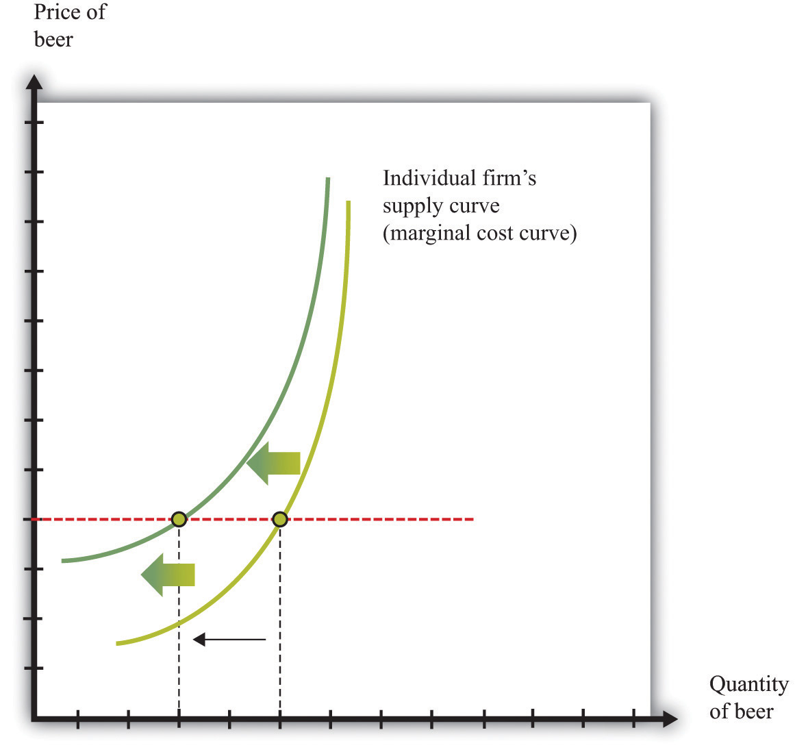
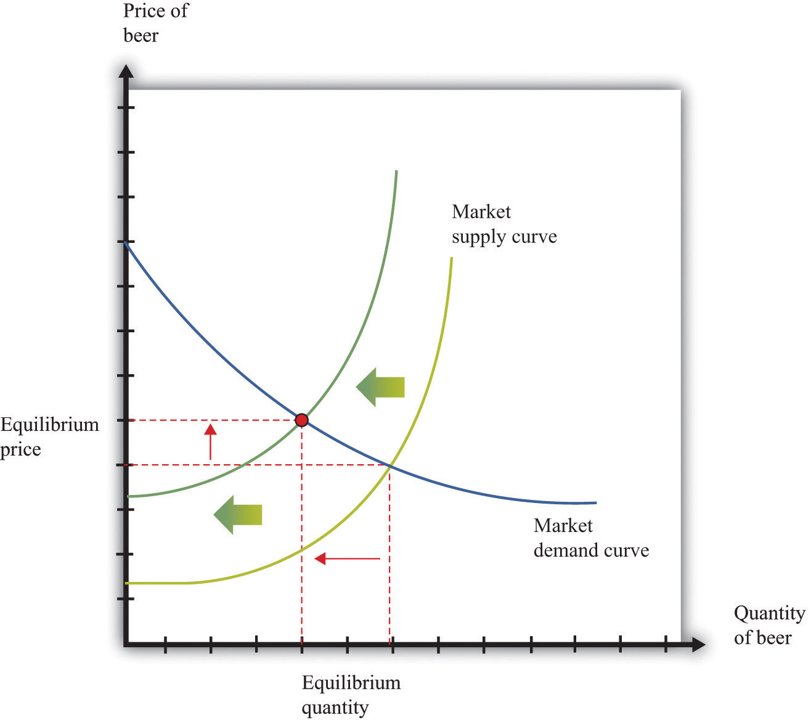
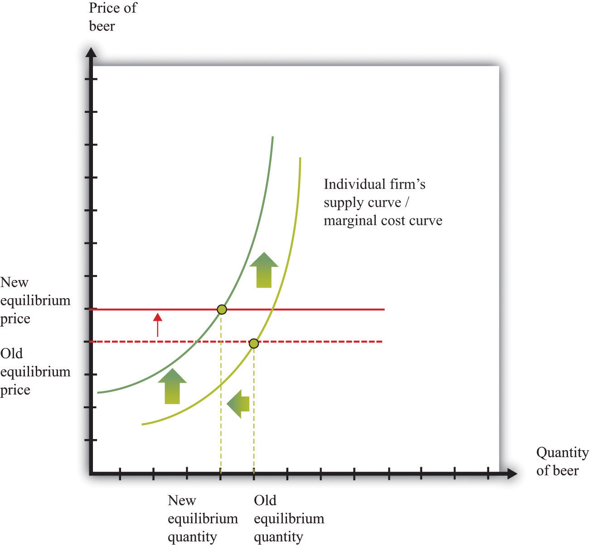
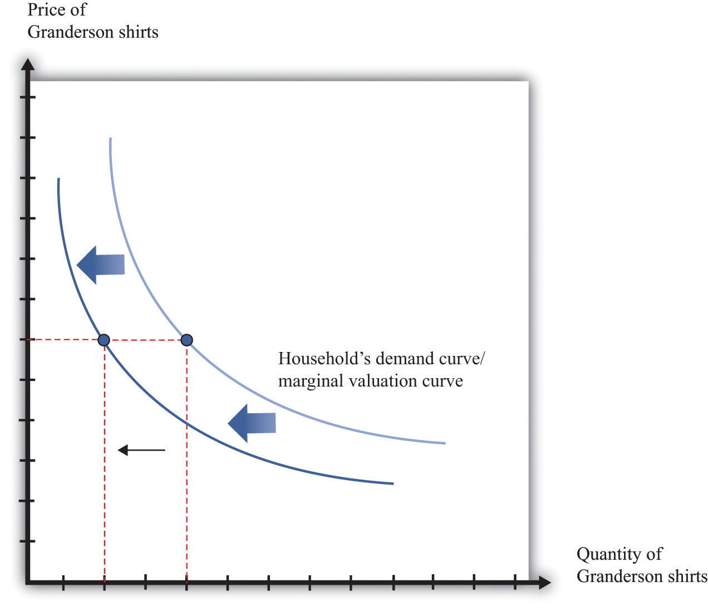
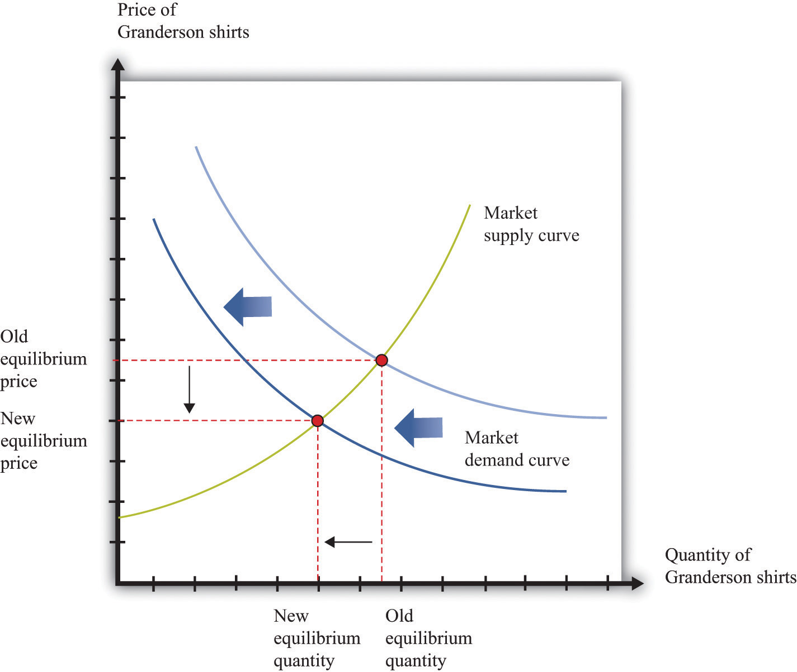
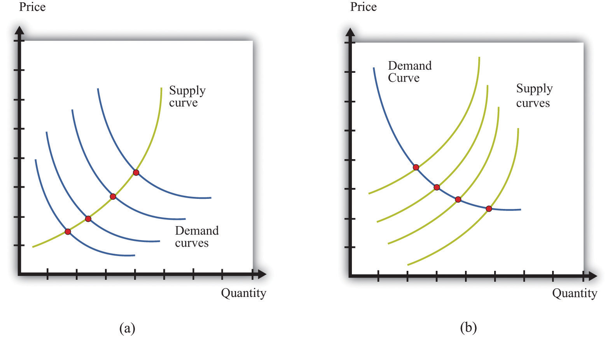

Economists are often asked to make predictions about the effects of events on economic outcomes. They do so by using the supply-and-demand framework. To use this framework, we must first distinguish between those things that we take as given (exogenousSomething that comes from outside a model and is not explained in our analysis. variables) and those that we seek to explain (endogenousSomething that is explained within our analysis. variables).
Toolkit: Section 31.16 "Comparative Statics"
An exogenous variable is something that comes from outside a model and is not explained in our analysis. An endogenous variable is one that is explained within our analysis. When using the supply-and-demand framework, price and quantity are endogenous variables; everything else is exogenous.
Figure 8.6 A Shift in the Supply Curve of an Individual Firm
An increase in marginal cost leads a firm to produce less output at any given price. This means that a firm’s supply curve shifts upward and to the left.
When we quoted the British newspaper article about beer prices in the chapter introduction, we omitted some sentences. The first sentence reads, in full: “The average price of a pint of beer could hit £4 [pounds sterling] after poor weather forced up the price of hops.” A few sentences later the article states: “Hop farmers have not seen any price rises for years, but the appalling summer has finally forced the prices up.” According to the article, the price of beer is increasing because the price of hops has increased.
This makes intuitive sense, but it is worth understanding the exact chain of reasoning here. Hops are a key ingredient in the production of beer. An increase in the price of hops means an increase in the cost of producing beer. More precisely, the marginal cost of producing beer increases. The typical beer producer decides how much to produce by observing this decision rule:
price = marginal cost.If marginal cost increases, then, at the existing price, the producer will find that price is now less than marginal cost. To bring price back in line with marginal cost, the producer will have to produce a smaller quantity. In fact, at any given price, an increase in marginal cost leads to a reduction in output (Figure 8.6 "A Shift in the Supply Curve of an Individual Firm"). The supply curve of an individual firm shifts to the left.
The increase in the price of hops affects all firms in the market. Each firm sees an increase in its marginal cost of production, so each firm produces less output at a given price: the shift in supply shown in Figure 8.6 "A Shift in the Supply Curve of an Individual Firm" applies to all firms in the market. Figure 8.7 "A Shift in Market Supply" shows the outcome in the market. Because all the individual supply curves shift to the left, the market supply curve likewise shifts to the left. At any given price, firms supply less beer to the market. From the figure, we see that the higher price of hops leads to an increase in the price of beer and a reduction in the quantity of beer produced and sold.
Figure 8.7 A Shift in Market Supply
An increase in the price of hops causes all beer producers to produce less at any given price. This means that the market supply curve shifts to the left. The consequence is an increase in the equilibrium price and a decrease in the equilibrium quantity.
For the individual producer, what does this mean? The producer sees an increase in marginal cost. In the new equilibrium, the producer also obtains a higher price. However, the increase in price is not as big as the increase in marginal cost. Because the producer sets price equal to marginal cost, each individual brewer still produces less. We show this in Figure 8.8 "The New Equilibrium from the Perspective of an Individual Firm".
Figure 8.8 The New Equilibrium from the Perspective of an Individual Firm
Following the increase in the price of hops, the equilibrium price of beer increases. An individual firm ends up with higher marginal cost but also receives a higher price for beer. Because the increase in price is smaller than the increase in marginal cost, beer production still decreases.
The approach that we used here is an illustration of a general technique used by economists to explain changes in prices and quantities and to make predictions about what will happen to market prices.
Toolkit: Section 31.16 "Comparative Statics"
Comparative statics is a technique that allows us to describe how market equilibrium prices and quantities depend on exogenous events. As such, much of economics consists of exercises in comparative statics. In a comparative statics exercise, you must do the following:
The most difficult part of a comparative staticsA technique that allows us to describe how market equilibrium prices and quantities depend on exogenous events. exercise is to determine, from the description of the economic problem, which curve to shift—supply or demand. Once you determine which curve is shifting, then it is only a matter of using the supply-and-demand framework to find the new equilibrium. The final step is to compare the new equilibrium point (the new crossing of supply and demand) with the original point. With this comparison, you can predict what will happen to equilibrium prices and quantities when something exogenous changes.
Let us try this technique again. Recall the second story from the chapter introduction about Detroit Tiger merchandise. In that story, we learned that “most shops have marked down jerseys and T-shirts branded with ex-Tigers between 25 and 50 percent.” Figure 8.9 "Shifts in Household Demand" shows the demand of a typical Detroit household’s demand for Granderson shirts. Now that Granderson has left the Tigers for the New York Yankees, the household’s marginal valuation for these shirts is lower. At any given price, a household wants to purchase fewer shirts, so the household’s demand curve shifts to the left.
Figure 8.9 Shifts in Household Demand
A decrease in the marginal valuation of Granderson T-shirts leads a household to demand a smaller quantity at any given price. This means that a household’s demand curve shifts to the left.
We would expect that this shift in demand would apply to most households that contain Detroit Tigers fans. If we now add all the demand curves together, we get the market demand curve. The market demand curve shifts to the left (Figure 8.10 "Shifts in Market Demand"). The end result is that we expect to see a decrease in the price of T-shirts—that is, the retailers put them in the discount bins—and also a decrease in demand.
Figure 8.10 Shifts in Market Demand
The decrease in demand causes both the equilibrium price and the equilibrium quantity of T-shirts to decrease.
Comparing our beer and T-shirt examples, we see that the quantity demanded decreased in both examples. In the first case, price increased; in the second case, price decreased. We can understand the difference by using the supply-and-demand framework. In the Detroit Tigers example, there is a decrease in the price of shirts and in the quantity sold. This might seem like a violation of the law of demand, which tells us that when price decreases, the quantity demanded increases. The explanation comes directly from Figure 8.10 "Shifts in Market Demand".
Curtis Granderson’s move leads to a shift in the demand curve and a movement along the supply curve. The law of demand, by contrast, applies to the movement along a demand curve.
Understanding the distinction between moving along a curve (either supply or demand) and shifting a curve is the hardest part about learning to use the supply-and-demand framework. Journalists and others frequently are confused about this—and no wonder. It requires practice to learn how to use supply and demand properly.
Let’s look at another example. An article in the British newspaper the Guardian reported about sales of beef when the news came out that eating beef might carry a risk of bovine spongiform encephalopathy (BSE), better known as mad cow disease. On November 1, 2000, the newspaper wrote, “Beef sales did drop after the link between BSE and deaths in humans was circumstantially established in 1996, but they have recovered as prices have fallen.”“First Beef—Now Lamb to the Slaughter?” Analysis, Guardian, November 1, 2000, accessed February 4, 2011, http://www.guardian.co.uk/uk/2000/nov/01/bse?INTCMP=SRCH.
The exogenous event here is the medical news about beef and mad cow disease. Presumably, this primarily affects the demand for beef: consumers decide to eat less beef and more of other products—such as chicken and pork. The demand curve for beef shifts to the left. As we saw in the T-shirt example, a leftward shift of the demand curve has two consequences: price decreases, and the quantity demanded and supplied also decreases. Thus the conclusion that the news should lead to a decrease in beef sales is perfectly consistent with our supply-and-demand analysis, as well as with common sense.
But what about the second part of the sentence? The article claims that beef sales “have recovered as prices have fallen.” This is not consistent with our supply-and-demand analysis. The decrease in prices is intimately connected with the decrease in quantity: both were caused by the health news. They are two sides of the same coin, so it does not make sense to use the decrease in prices to explain a recovery in beef sales.
In fact, you should be able to convince yourself that an increase in beef sales together with a decrease in prices (as asserted by the article) would require a rightward shift of the supply curve. (Draw a diagram to make sure you understand this.) It seems unlikely that health concerns about beef led cattle farmers to increase their production of beef. It is hard to escape the conclusion that the journalist became confused about shifts in the demand curve and movements along the curve.
Comparative statics allows us to make qualitative predictions about prices and quantities. Given an exogenous shock in a market, we can determine whether (1) the price is likely to increase or decrease and (2) the quantity bought and sold is likely to increase or decrease. Often, though, we would like to be able to do more. We would like to be able to make some predictions about the magnitudes of the changes.
Figuring out what will happen to equilibrium prices and quantities requires economists to know the shapes of supply and demand. When the supply curve shifts, we need to know about the slope of the demand curve to predict the impact on price and quantity. When the demand curve shifts, we need to know about the slope of the supply curve to predict the impact on price and quantity. More precisely, we need measures of the elasticity of demand and of supply.
How do economists learn about these elasticities? The answer, perhaps surprisingly, is through the logic of comparative statics. For example, suppose the supply curve does not move, but the demand curve shifts around a lot. As the demand curve shifts, we observe different combinations of prices and quantities. Part (a) of Figure 8.11 "Finding the Elasticities of the Supply and Demand Curves" shows this in a supply-and-demand diagram. The different points that we observe are points on the supply curve. If the demand curve shifts but the supply curve does not, we eventually gather data on the supply curve. We can use these data to come up with estimates of the price elasticity of supplyThe percentage change in the quantity supplied to the market divided by the percentage change in price..
Toolkit: Section 31.2 "Elasticity"
The price elasticity of supply equals the percentage change in the quantity supplied divided by the percentage change in price.
Figure 8.11 Finding the Elasticities of the Supply and Demand Curves
Economists estimate the elasticities of supply and demand curves by looking for situations in which one curve is relatively stable while the other one is moving. What we actually observe are the equilibrium points. Movements in the demand curve (a) mean that the equilibrium points trace out the supply curve; movements in the supply curve (b) allow us to observe the demand curve. In most real-life cases, both curves move, and economists use sophisticated statistical techniques to tease apart shifts in supply from shifts in demand.
Part (b) of Figure 8.11 "Finding the Elasticities of the Supply and Demand Curves" shows the opposite case, where demand is stable and the supply curve is shifting. In this case, the data that we observe are different points on the demand curve. We can use this information to estimate the price elasticity of demandThe percentage change in the quantity demanded in the market divided by the percentage change in price., which is the percentage change in the quantity demanded divided by the percentage change in price. It is important to note that we are speaking here about the elasticity of the market demand curve, not the elasticity of the demand curve facing an individual firm.
This sounds straightforward in theory, but it is difficult in practice. Economic data are messy. Typically, both the demand curve and the supply curve are shifting simultaneously. If economists had access to controlled environments, perhaps like a biochemist does, we could “shift the demand curve” and see what happens in the laboratory. Occasionally, we get lucky. Sometimes we can isolate a particular event that we know is likely to shift only one of the curves. This is sometimes called a natural experimentAn exogenous change that can be associated with a shift in either the demand curve only or the supply curve only.. Most of the time, however, we are not so lucky. Economists and statisticians have come up with sophisticated statistical techniques to disentangle shifts in demand and supply in these circumstances.Chapter 7 "Where Do Prices Come From?" discusses how a firm can use a similar technique to learn about the demand curve that it faces. Chapter 11 "Raising the Wage Floor" discusses the difficulties of measuring the demand curve for labor.